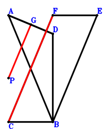
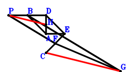
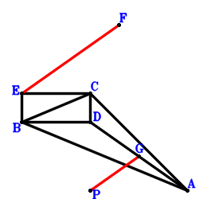

Exercise 35： Let FEBC be a parallelogram. P, E are the orthocenter and circumcenter of △DAB. G is the midpoint of AD. Prove that FC=2GP.

\(\because \) P, E are the orthocenter and circumcenter of △DAB \(\therefore \small\overrightarrow{PE}=\small\overrightarrow{PA} + \small\overrightarrow{PB} + \small\overrightarrow{PD}\).\(\because \) FEBC is a parallelogram \(\therefore \small\overrightarrow{PF}=\small\overrightarrow{PA} + \small\overrightarrow{PC} + \small\overrightarrow{PD}\).\(\because \) G is the midpoint of AD \(\therefore \small\overrightarrow{PG}=\dfrac{\small\overrightarrow{PA}}{2} + \dfrac{\small\overrightarrow{PD}}{2}\).In conclusion, \(\dfrac{\small\overrightarrow{CF}^{2}}{4} - \small\overrightarrow{PG}^{2}=- \small\overrightarrow{PG}^{2} + \dfrac{\left(- \small\overrightarrow{PC} + \small\overrightarrow{PF}\right)^{2}}{4}=- \left(\dfrac{\small\overrightarrow{PA}}{2} + \dfrac{\small\overrightarrow{PD}}{2}\right)^{2} + \dfrac{\left(\small\overrightarrow{PA} + \small\overrightarrow{PD}\right)^{2}}{4}=0\), that is, FC=2GP.
Exercise 43： Let BDEA be a parallelogram. BPFG is a trapezoid with BG//PF and BG=2PF. H, F are the midpoints of AD, CE, respectively. Prove that CG=2PH.

\(\because \) BDEA is a parallelogram \(\therefore \small\overrightarrow{CE}=\small\overrightarrow{CA} - \small\overrightarrow{CB} + \small\overrightarrow{CD}\).\(\because \) F is the midpoint of CE \(\therefore \small\overrightarrow{CF}=\dfrac{\small\overrightarrow{CE}}{2}=\dfrac{\small\overrightarrow{CA}}{2} - \dfrac{\small\overrightarrow{CB}}{2} + \dfrac{\small\overrightarrow{CD}}{2}\).\(\because \) BG//PF and BG=2PF \(\therefore \small\overrightarrow{CG}=\small\overrightarrow{CB} + 2 \small\overrightarrow{CF} - 2 \small\overrightarrow{CP}=\small\overrightarrow{CA} + \small\overrightarrow{CD} - 2 \small\overrightarrow{CP}\).\(\because \) H is the midpoint of AD \(\therefore \small\overrightarrow{CH}=\dfrac{\small\overrightarrow{CA}}{2} + \dfrac{\small\overrightarrow{CD}}{2}\).In conclusion, \(\dfrac{\small\overrightarrow{CG}^{2}}{4} - \small\overrightarrow{PH}^{2}=\dfrac{\small\overrightarrow{CG}^{2}}{4} - \left(\small\overrightarrow{CH} - \small\overrightarrow{CP}\right)^{2}=- \left(\dfrac{\small\overrightarrow{CA}}{2} + \dfrac{\small\overrightarrow{CD}}{2} - \small\overrightarrow{CP}\right)^{2} + \dfrac{\left(\small\overrightarrow{CA} + \small\overrightarrow{CD} - 2 \small\overrightarrow{CP}\right)^{2}}{4}=0\), that is, CG=2PH.
Exercise 79： Let EBDC be a parallelogram. P, F are the orthocenter and circumcenter of △ACB. G is the midpoint of DA. Prove that FE=2GP.

\(\because \) EBDC is a parallelogram \(\therefore \small\overrightarrow{PE}=\small\overrightarrow{PB} + \small\overrightarrow{PC} - \small\overrightarrow{PD}\).\(\because \) P, F are the orthocenter and circumcenter of △ACB \(\therefore \small\overrightarrow{PF}=\small\overrightarrow{PA} + \small\overrightarrow{PB} + \small\overrightarrow{PC}\).\(\because \) G is the midpoint of DA \(\therefore \small\overrightarrow{PG}=\dfrac{\small\overrightarrow{PA}}{2} + \dfrac{\small\overrightarrow{PD}}{2}\).In conclusion, \(\dfrac{\small\overrightarrow{EF}^{2}}{4} - \small\overrightarrow{PG}^{2}=- \small\overrightarrow{PG}^{2} + \dfrac{\left(- \small\overrightarrow{PE} + \small\overrightarrow{PF}\right)^{2}}{4}=- \left(\dfrac{\small\overrightarrow{PA}}{2} + \dfrac{\small\overrightarrow{PD}}{2}\right)^{2} + \dfrac{\left(\small\overrightarrow{PA} + \small\overrightarrow{PD}\right)^{2}}{4}=0\), that is, FE=2GP.